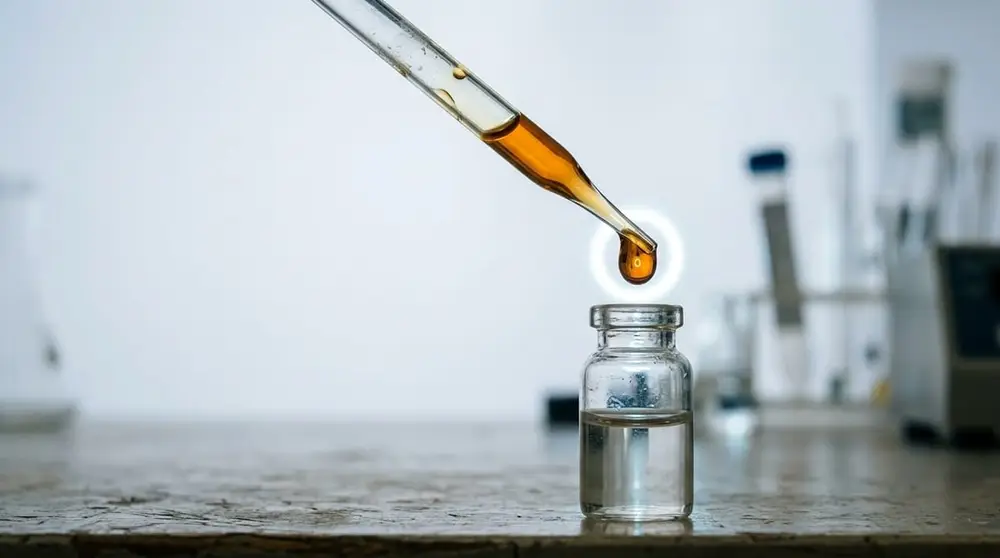
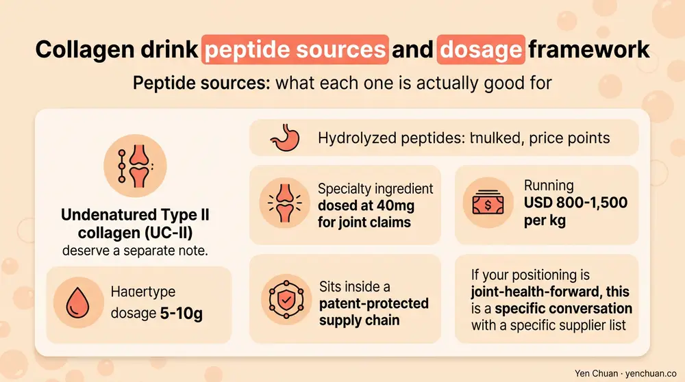
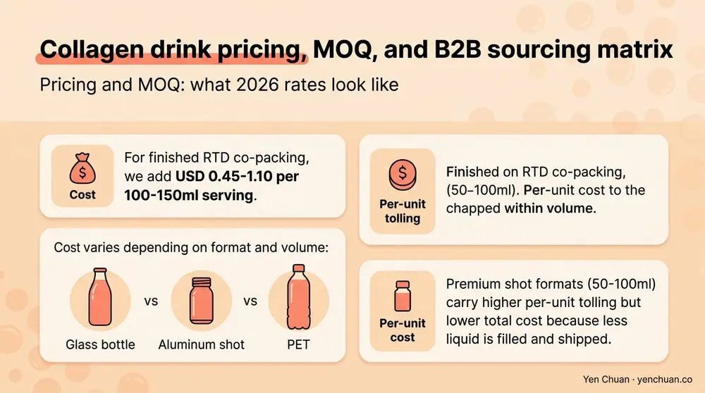

Articles / Business & sourcing
Collagen Drink Manufacturing: B2B Sourcing Guide
2026-04-08 · Industry Trends, Sourcing, Technical Guide

Collagen drinks went from a Tokyo convenience-store curiosity to a USD 2 billion+ global category in under a decade, and the segment is now the single fastest-growing line inside the functional beverage aisle across the US, Southeast Asia, and the Gulf. For B2B buyers — brand owners, co-packers, and beverage operators adding a functional row — the sourcing conversation is still confusing. Bovine or marine? Type I or II? 2.5g or 10g per serving? The spec sheet numbers don't always match the label claim, and the price range across suppliers can span 3x for what looks like the same ingredient. This guide is the one we wish every new collagen buyer had on their first call.
Why collagen drinks are the B2B opportunity with the trickiest spec sheet
Grand View Research sized the global collagen market at USD 10.2 billion in 2024, with food and beverage applications growing at 9.1% CAGR — faster than either cosmetics or nutraceuticals. Inside F&B, ready-to-drink collagen beverages are the standout format. Japan and Korea remain the mature markets; the US and UK are tracking 15-22% YoY growth; Southeast Asia and the Gulf are posting 25%+ in the premium convenience channel.
The complication for B2B buyers is that "collagen" is a category, not a specification. A collagen drink can be formulated with bovine Type I, marine Type I, chicken Type II, porcine Type I&III, or blended peptides — and the molecular weight, amino acid profile, and functional performance differ across all of them. Brand claims around efficacy (skin elasticity, joint health, gut support) attach to specific clinical doses and specific peptide profiles, so getting the sourcing right is directly linked to whether your marketing claim can survive a regulatory review.
Peptide sources: what each one is actually good for
| Source | Type | Molecular weight | Best claim positioning | Relative cost |
|---|---|---|---|---|
| Bovine hide peptides | Type I&III | 2-5 kDa | General beauty, gut health | Baseline (1.0x) |
| Marine (fish skin) peptides | Type I | 1-3 kDa | Premium skin, higher bioavailability | 1.5-2.2x |
| Chicken sternal peptides | Type II | 3-5 kDa (hydrolyzed) or undenatured | Joint health, mobility | 1.3-1.8x |
| Porcine peptides | Type I&III | 2-5 kDa | Budget beauty, limited in halal/kosher markets | 0.8-0.9x |
| Eggshell membrane | Type I, V, X | Variable | Joint, skin, premium | 2.5-4.0x |
Two realities shape how buyers choose. First, marine collagen commands a 50-120% premium over bovine and backs it with better dermatology trial data and cleaner claim language — but it's more volatile on price because supply is tied to fish farming output. Second, halal and kosher markets rule out porcine entirely and require halal-certified bovine or marine, which is still only about 60% of global supply by volume.
Undenatured Type II collagen (UC-II) deserves a separate note: it's a specialty ingredient dosed at 40mg for joint claims (vs 5-10g for hydrolyzed peptides), runs USD 800-1,500 per kg, and sits inside a patent-protected supply chain. If your positioning is joint-health-forward, this is a specific conversation with a specific supplier list.

Dosage standards: what the clinical literature actually supports
Label claims for collagen drinks depend on the peptide dose per serving matching a clinically studied range. Here's what the peer-reviewed literature currently supports, summarized from reviews in the Journal of Medicinal Food and Nutrients:
- Skin elasticity, hydration, wrinkle reduction: 2.5-10g hydrolyzed collagen daily for 8-12 weeks. The most cited dose is 5g of marine or bovine Type I peptides.
- Joint comfort, mobility: 10g hydrolyzed collagen daily, or 40mg undenatured Type II daily.
- Gut health, leaky gut support: 10-20g hydrolyzed collagen daily. Evidence is still emerging.
- Bone density: 5g specific collagen peptides (FORTIBONE or similar branded fractions) for 12+ months.
- Muscle recovery: 15-20g collagen + vitamin C post-exercise.
Two operator implications. If your RTD serving delivers 2g of collagen, your label claim cannot honestly reach "clinically proven skin elasticity" — you're under the minimum studied dose. If your serving delivers 10g, you have room to make multiple functional claims but need to check regional regulatory thresholds (the EU and China are stricter than the US on cosmetic-style claims on food labels).
Most successful RTD collagen drinks land at 5g per serving for beauty positioning and 10g for multi-benefit positioning. Below 2.5g is placebo-range; above 15g per serving hits solubility and mouthfeel ceilings without meaningful efficacy upside.
Formulation challenges that kill first-pass collagen RTDs
Collagen peptides are highly soluble and have a relatively neutral flavor, so operators often assume formulation is trivial. It isn't. Three failure modes we see repeatedly:
Off-notes amplified by heat. Pasteurization at UHT temperatures develops sulfur and marine off-notes in collagen peptides, especially in marine sources. A pilot that tastes clean cold can taste fishy after scale-up pasteurization. Test with the actual heat profile, not the bench recipe.
Low-pH haze and precipitation. Collagen peptides form stable solutions at pH 3.5-4.5 and at pH 6.5-7.2, but the zone around pH 5.0-5.8 shows haze, sediment, and eventual gelling on cold storage. If your flavor system lands in that pH range, you'll be adding stabilizers or citric acid to shift it.
Foaming during filling. High-peptide liquids foam aggressively, slowing line speeds and causing fill-weight variability. An anti-foam system (food-grade silicone or specific emulsifier) plus a cooled-fill temperature typically resolves this, but it needs to be dialed in at scale-up.
For most B2B projects these issues are solvable — they just require an R&D partner who has actually scaled collagen RTD before, not a co-packer running it for the first time with your money.
Pricing and MOQ: what 2026 rates look like
Collagen peptide ingredient pricing through Q1 2026:
| Grade | FOB Asia per kg | MOQ |
|---|---|---|
| Bovine hide, 2-5 kDa, standard | USD 18-26 | 500 kg |
| Marine, fish skin, 1-3 kDa, premium | USD 38-58 | 200 kg |
| Chicken Type II hydrolyzed | USD 45-65 | 200 kg |
| Undenatured Type II (UC-II equivalent) | USD 800-1,500 | 25-50 kg |
| Eggshell membrane | USD 280-450 | 100 kg |
For finished RTD co-packing, add USD 0.45-1.10 per 100-150ml serving depending on format (glass bottle vs aluminum shot vs PET) and volume. Premium shot formats (50-100ml) carry higher per-unit tolling but lower total cost because less liquid is filled and shipped.

Negotiating notes we give every buyer. First, lock peptide specification to molecular weight range (kDa), not just "hydrolyzed" — the number on the spec sheet determines bioavailability and mouthfeel. Second, require COAs with hydroxyproline content (a collagen-specific marker) to confirm you're actually buying collagen and not a generic protein hydrolysate. Third, for marine sources, require species of origin documentation — tilapia skin, pangasius skin, and cod skin have different amino acid profiles and different sustainability stories.
Regulatory considerations by market
- US: Generally self-GRAS; label claims stay under structure-function rules. FDA prohibits disease claims. FTC enforces substantiation for any efficacy claim.
- EU: Collagen is classified as food, not novel food, but specific health claims require EFSA approval. Most claims rely on general beauty language.
- Japan: Foods with Function Claims (FFC) system allows peptide-specific claims if supported by clinical data.
- China: Blue-hat registration required for specific health food claims; general food classification for beauty drinks.
- GCC: Halal certification for the peptide source is mandatory — bovine must be from halal-slaughtered cattle; porcine banned.
Build your regulatory map during formulation, not after. Changing sources after label printing costs an order of magnitude more than choosing correctly on day one. For the broader playbook on building a compliant supply chain, our bubble tea supplier guide covers the same vetting discipline applied to collagen sourcing. And for founders comparing origin options, the Taiwan vs China vs Southeast Asia sourcing comparison maps cleanly onto collagen origin choice.
Sources
- Grand View Research — Collagen Market
- Journal of Medicinal Food — Collagen Clinical Reviews
- Nutrients — Collagen Supplementation Studies
- FDA — Food Labeling Guide
- EFSA — Health Claim Applications
About Yen Chuan
Yen Chuan has been at the heart of Taiwan's bubble tea industry for over 20 years, supplying premium powders, syrups, tapioca pearls, and tea leaves to thousands of boba shops worldwide. With an in-house R&D lab and a commitment to quality ingredients, Yen Chuan is more than a supplier — we're your partner in the boba business. Our R&D team has formulated collagen-forward beverages for beauty, joint, and crossover boba SKUs, with direct relationships across bovine, marine, and Type II peptide suppliers in East Asia — including halal-certified chains for GCC-bound programs.
Build a collagen drink that survives the spec sheet
Planning a collagen RTD, collagen boba SKU, or functional blend for your brand? Talk to our R&D team or browse our functional ingredient catalog — we ship from Taiwan with full peptide documentation and flexible MOQ for pilot programs.
Frequently Asked Questions
Q: What's the best collagen type for a beauty drink?
A: Marine Type I peptides at 1-3 kDa molecular weight deliver the strongest skin elasticity and hydration data and the cleanest label positioning, at 50-120% premium over bovine. Bovine Type I&III at 2-5 kDa is the cost-effective alternative for general beauty claims. The typical serving for a beauty RTD is 5g per bottle.
Q: How many grams of collagen should a drink contain?
A: 5g per serving is the standard for beauty positioning, and 10g per serving for multi-benefit (beauty + joint + gut) positioning. Doses below 2.5g fall below clinically studied ranges, and doses above 15g hit mouthfeel and solubility ceilings without added benefit. Joint-focused undenatured Type II uses a much smaller 40mg dose.
Q: How much does collagen cost per kilogram in 2026?
A: Standard bovine hide peptides run USD 18-26 per kg FOB Asia, marine peptides USD 38-58 per kg, chicken Type II hydrolyzed USD 45-65 per kg, and undenatured Type II (UC-II-class) USD 800-1,500 per kg. Prices move with raw fish and cattle availability and with currency; quarterly repricing is common on annual contracts.
Q: What's a typical MOQ for a collagen drink ingredient?
A: Standard bovine peptide MOQ is 500 kg per order; marine and chicken Type II usually start at 200 kg; undenatured Type II can go as low as 25-50 kg due to its higher unit cost. Private-label finished RTD runs typically require 10,000-25,000 bottle MOQs depending on format.
Q: Can I make halal or kosher collagen drinks?
A: Yes. Halal-certified bovine collagen (from halal-slaughtered cattle) and marine collagen (marine sources are generally halal) cover most GCC and Muslim-majority markets. Kosher collagen requires certified supply from OU, OK, or Star-K chains — typically marine or specifically certified bovine. Porcine collagen is excluded from both halal and kosher products.